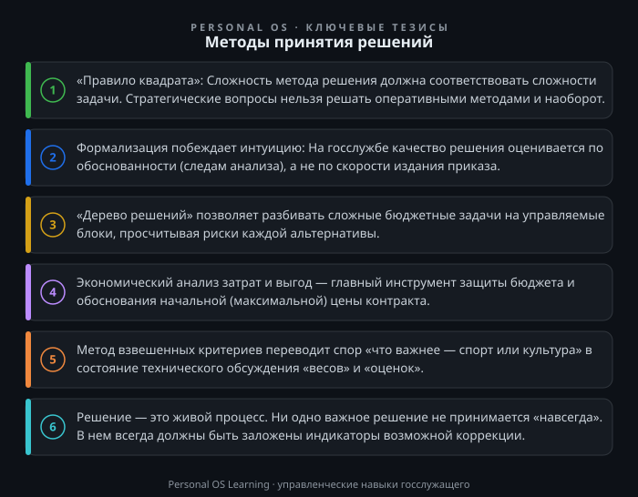

Каждый день государственный служащий сталкивается с необходимостью принимать решения — от оперативных («как перенести совещание, чтобы никто не обиделся») до стратегических («какую программу поддержки малого бизнеса запустить в следующем году»). Однако цена ошибки в государственном управлении несопоставима с коммерческой. Неверное решение чиновника — это не потеря прибыли, а неэффективно потраченные бюджетные средства, сорванные социальные обязательства и подорванное доверие граждан к институтам власти.
В коммерческом секторе «быстрый» предприниматель может позволить себе трижды ошибиться, чтобы один раз выстрелить. На госслужбе такая логика неприемлема: мы работаем в системе жестких нормативных ограничений, публичной отчетности и высокой степени ответственности. Здесь решение должно быть не просто быстрым, а качественным, прослеживаемым и обоснованным. Именно поэтому владение формальными методами принятия решений — это не академическая роскошь, а элемент профессиональной компетенции, которая позволяет аргументированно отстаивать позицию перед вышестоящим руководством, коллегами и контролирующими органами.
Цель этой статьи — систематизировать подходы к выбору наилучшего варианта действий и показать, как классические управленческие инструменты адаптируются к реалиям российской государственной службы, бюрократической процедуре и ограниченным срокам.
Прежде чем говорить о методах, важно определить природу самого явления. Управленческое решение — это не просто волевой акт «начальник так сказал». Это процесс, включающий анализ информации, оценку альтернатив, выбор варианта и планирование его реализации. В контексте государственного управления этот процесс всегда встроен в определенный нормативный контур.
Решение госслужащего — это всегда реализация или подготовка государственной функции. Оно должно соответствовать не только логике здравого смысла, но и букве закона. Когда мы рассматриваем методы, мы должны помнить о трех ключевых ограничениях, которые накладывает госслужба:
Следовательно, задача методов — не «угадать» будущее, а структурировать неопределенность и сделать процесс выбора прозрачным, логичным и воспроизводимым. Это позволяет руководителю в любой момент объяснить, почему было выбрано одно решение, а не другое.
Частая ошибка начинающего управленца — попытка решить сложный стратегический вопрос теми же методами, что и текущий операционный. Прежде чем выбрать инструмент, нужно понять природу проблемы. Простой и эффективный способ сделать это — модель, которую можно назвать «Декартовы координаты» (или матрица важность/срочность).
Представьте себе систему координат: ось X — «Важность», ось Y — «Срочность». Нанесите на нее все вопросы, требующие вашего решения.
Практический посыл: Не ищите сложных аналитических решений для мелких проблем и не пытайтесь решить стратегические вопросы «на коленке», используя кейсы оперативного характера. Определив квадрат, вы автоматически сужаете выбор метода до приемлемого уровня сложности. Если вопрос попал во второй квадрант, используйте приведенные ниже рациональные методы. Если в первый — внедряйте алгоритмы действий, уже прописанные в вашем должностном регламенте.
Классический рациональный метод предполагает прохождение пяти этапов: диагностика, критерии, альтернативы, оценка, выбор. Однако в государственном управлении мало просто выбрать лучший вариант — нужно показать, почему он лучший. Формализованный инструмент, который идеально подходит для этих целей — «Дерево решений».
Это графический метод, который позволяет визуализировать последовательность действий и их вероятностные исходы. Для госслужащего он незаменим при планировании расходов или выборе способа достижения показателей государственной программы.
Как это работает на практике:
Предположим, перед органом власти стоит задача снизить количество жалоб на качество дорог в городе (на 20% к концу года).
Инструментальная ценность «Дерева решений» в том, что оно позволяет разбить огромную, пугающую проблему на отдельные управляемые блоки. Вы можете делегировать проработку каждой «ветки» разным отделам, а затем собрать общую картину. Кроме того, этот метод идеально ложится в логику обоснования бюджетных заявок: к текстовой части легко приложить графическую схему и расчеты, показывающие руководителю, почему вы отклоняете вариант А и выбираете В.
Ключевой компетенцией чиновника-управленца является умение оценивать эффективность. Универсальным методом здесь выступает Анализ «затраты — выгоды» (CBA). Он особенно критичен при формировании планов закупок и обосновании начальных (максимальных) цен контрактов.
Казалось бы, все очевидно: надо тратить меньше, получать больше. Но в госсекторе переводятся в деньги и те вещи, которые в бизнесе не считают: социальный эффект. Как вы измерите выгоду от установки новой детской площадки? Не только в прямых доходах (которых нет), но и в снижении травматизма, повышении удовлетворенности граждан.
Методика применения:
Пример: Выбор между покупкой дешевого, но неэффективного оборудования и дорогого, но энергосберегающего. По CBA, если взять горизонт планирования 5 лет и учесть рост тарифов, второй вариант может оказаться экономически эффективнее, несмотря на высокую стартовую цену. Этот метод дает вам весомый аргумент для защиты бюджета от попыток «удешевить» проект в ущерб качеству. Применение этого метода напрямую связано с процедурой оценки регулирующего воздействия, когда проект акта проходит публичные обсуждения и расчет финансово-экономического обоснования.
Часто выбор нужно сделать не между «яблоками и апельсинами», а между сложными инфраструктурными проектами, которые несопоставимы по своей природе. Например, что важнее: построить ФОК (физкультурно-оздоровительный комплекс) или капитально отремонтировать библиотеку при ограниченном бюджете? Математически точно сравнить «спортивный дух» и «культурное просвещение» невозможно без введения формальных критериев.
Здесь на помощь приходит метод взвешенной многокритериальной оценки — это попытка «оцифровать» стратегические приоритеты.
Алгоритм действий:
Сложность метода заключается в том, что веса часто устанавливаются административным решением (например, указание губернатора сосредоточиться на спорте). Это нормально. Данный метод полезен не тем, что находит «истину», а тем, что формализует процесс обсуждения. Он не позволяет ссылаться на «нравится/не нравится», заставляя участников спорить о критериях и весах, что автоматически переводит дискуссию из эмоциональной плоскости в деловую.
Как бы мы ни старались формализовать процесс, будущее остается непредсказуемым (внешняя политика, экономические кризисы, форс-мажоры). В реальности госслужбы метод «делаем одно точное решение» часто заменяется методом «управление по слабым сигналам» и сценарным планированием.
Вместо попытки угадать один вариант будущего, постройте 3-4 модели развития событий:
Техника ПИФ (Предчувствие-Измерение-Факт):
Ваша задача — не разработать план для каждого исхода (это дорого), а разработать систему индикаторов, по которым вы поймете, что сценарий меняется. Например, вы решили «пересесть» с подрядчика на собственный ресурс по ремонту дорог (Вариант Б из дерева решений). Ваши индикаторы риска: резкий скачок цен на битум, банкротство всех подрядчиков в регионе. Как только индикатор сработал, вы включаете заранее прописанный сценарий ускоренного перехода.
Главное правило метода: принимая решение сегодня, всегда прописывайте в протоколе совещания три вещи:
Это превращает решение из статичного документа в живой инструмент управления.
Для закрепления материала предлагаю вам выполнить три упражнения, которые займут не более 15-20 минут каждое.
Задание 1. Проведите «Декартову инвентаризацию»
Возьмите план работы вашего отдела на текущий месяц. Выпишите на лист бумаги 10 предстоящих задач (согласования, подготовка докладов, отчеты). Нанесите их на сетку «Важность/Срочность». Определите, какие задачи из квадранта «Срочно/Не важно» вы можете настроить выполнять по шаблону или передать на младшие должности. Выпишите одну задачу из квадранта «Важно/Не срочно», на которую вы давно не находите времени из-за «текучки». Запланируйте 2 часа в пятницу для ее выполнения. Результатом упражнения станет освобождение не менее 10% вашего рабочего времени.
Задание 2. Постройте мини-«Дерево решений» для вашей текучки
Выберите одну проблему, которая стоит перед вашим отделом (например, хроническое несоблюдение сроков предоставления отчетности). Сформулируйте три альтернативных способа решения (издание приказа, изменение регламента, разработка напоминающей системы в СЭД вашего органа). Для каждой альтернативы пропишите: (1) затраты времени на реализацию, (2) зону ответственности, (3) возможные риски. Напишите на стикере и приклейте к монитору ваш вывод о том, какой вариант оптимален. Через неделю проверьте, сработал ли выбор.
Задание 3. Примените многокритериальную оценку
Представьте, что вам выделили небольшой грант на обучение сотрудников (или на улучшение рабочих мест). Не выбирайте «на глаз». Составьте таблицу для двух-трех вариантов расходования средств (например, премирование, покупка техники, оплата курсов повышения квалификации). Оцените их по шкале от 1 до 5 по трем критериям: польза для результата отдела (вес 0.5), скорость получения эффекта (вес 0.3), нематериальная мотивация (вес 0.2). Посчитайте сумму баллов и примите управленческое решение на основе полученной математики. Вы удивитесь, насколько ваш выбор может отличаться от эмоционального.
Государственная служба — это среда с высоким уровнем неопределенности, жесткими нормами и тотальной публичной ответственностью. Успешное управление здесь невозможно без использования системных методов. Каждый раз, сталкиваясь с задачей выбора:
Решения, принятые такими методами, всегда имеют доказательную базу. Это отличает профессионального управленца от «исполнителя по наитию». Вы берете на себя ответственность не только за выбор, но и за аргументацию этого выбора, что в конечном итоге снижает риски и повышает доверие граждан.

Открыть инфографику в полном размере ↗